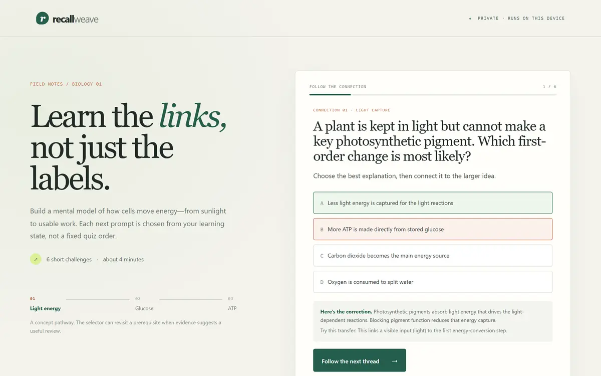
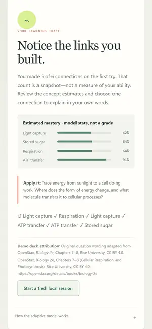

Jacob MetoyerI direct AI agents to carry out what I ask.
AI agents carry out whatever I direct, software included. That work has included running a home estate of several machines, producing research reports, disk and ops cleanup, and building this site. I set the bar and decide what ships. Every demo below runs, and its source is public so you can check the work.
Each one runs. The images are captures of the real thing; the links open it.


01ForgeHacks 2026 · AI + Education
RecallWeave
A browser-only biology lesson that picks your next question by expected information gain and shows its mastery estimates as you answer.
The learner model is plain Bayesian knowledge tracing with every probability visible; there is no chatbot and nothing leaves the page. Submitted to ForgeHacks 2026 (Devpost entry 1221781).
Paste an order-confirmation email and get the return deadline plus a calendar reminder, parsed entirely in your browser.
Rule-based extraction of store, date, order number and total, a per-store return-window table, and an RFC 5545 calendar file with a reminder three days out. Try a sample: the emails are fictional.
A toy air-traffic scenario where an agent may only propose; deterministic code checks the proposal, a human approves, and every step lands in a hash-chained audit log.
Real output from the repository's demo, trimmed to the fields that tell the story (hashes removed). Synthetic aircraft only; not operational ATC software.
Windows-first multimodal research capture: a daemon, versioned worker plugins and sealed session packages, with an offline QC demo on synthetic EMG/IMU data.
Three small Python checks for back-office paperwork (utility bills, freight detention, PT authorizations), run on synthetic data with file:row evidence.
About
I study computer science and physics at Cal State Long Beach, with a minor in biology, and I'm working toward MD/PhD training.
I direct AI agents across more than software. That work includes running a home estate of several machines, producing research reports, disk and ops cleanup, and building this site. I set the bar and decide what ships.
A result can be a report, an ops fix, or software. I decide what is ready to ship.
The fastest way to reach me or see what I'm working on is GitHub. github.com/Jacob-Met